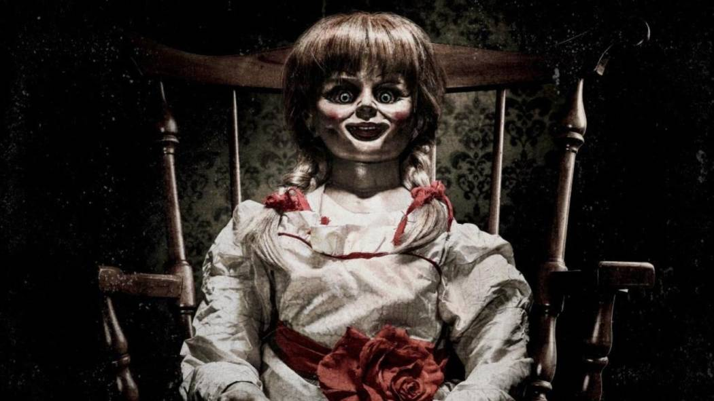
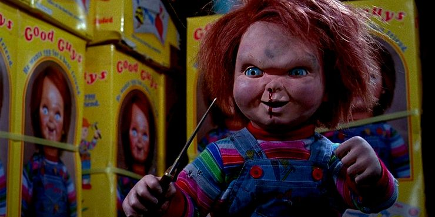
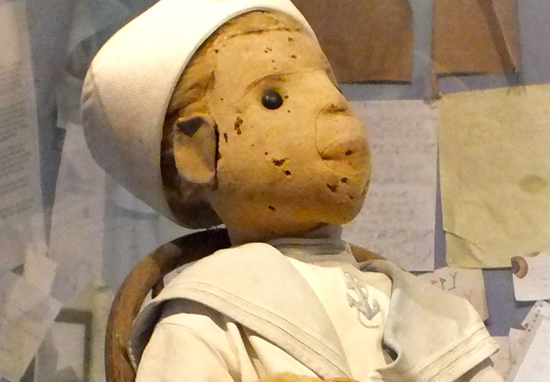
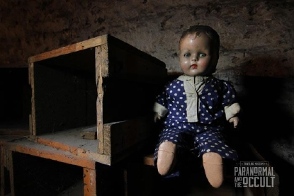
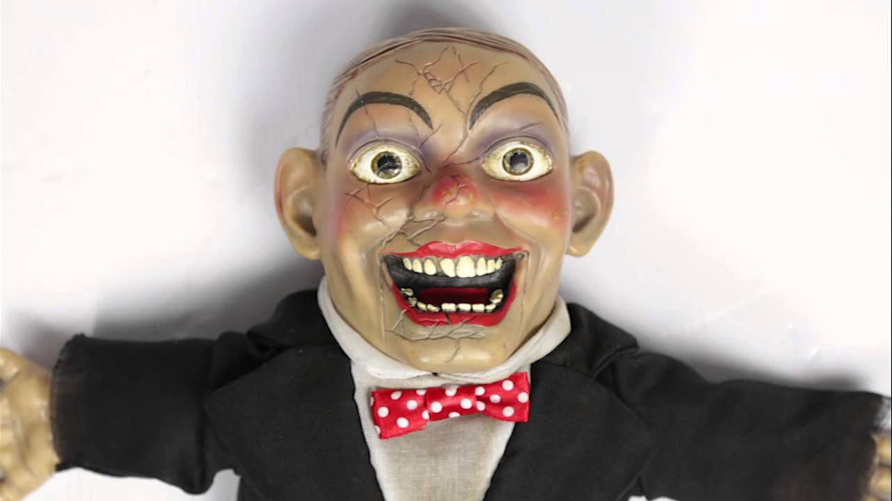

Annabelle is an allegedly haunted doll housed in the occult museum of the paranormal investigators Ed and Lorraine Warren. A character based on the doll is a reoccurring antagonist in the Conjuring Universe.According to a clip Spera showed, the real-life Annabelle story began in 1970 when a 28-year-old nurse received the Raggedy Ann doll as a birthday gift from her mom. She put the rag doll on her bed and began to notice it changing positions. A leg would be crossed, or the doll would be lying on its side.
The real story of Robert, the haunted doll that inspired Chucky from Child's Play.Robert the Doll was gifted to Robert Eugene Otto his family's maid in Key West, Florida in 1906. It's believed she practised black magic and voodoo, and put a curse on the doll before handing it over because she was unhappy.Chucky made his first appearance in the 1988 film Child's Play. In the film, serial killer Charles Lee Ray (Brad Dourif) uses a voodoo ritual to transfer his soul into a Good Guys doll in an effort to escape from Detective Mike Norris (Chris Sarandon)
Robert was an inspiration for the terrifying Chucky doll of the Child’s Play series. Robert is a life-sized doll, which is rather unusual in itself. It was reportedly made by the famous Steiff toy company in Germany. It was given to the Florida artist Robert Eugene “Gene” Otto as a birthday present when he was a child in 1904. His grandfather had bought it while on a trip to Germany. The doll wears a sailor suit that was probably a childhood outfit of the real Gene. Another story has it that the doll was a gift from a malicious voodoo-practicing maid as revenge for some unknown wrongdoing by the family
Mandy does not play well with others. In the Quesnel Museum in Canada where she now lives, staff say they must keep her in a separate display case. When she is displayed with other dolls, she knocks them over. Staff also report their lunches disappear and that visitors’ cameras often fail when taking pictures of the doll. Mandy is a porcelain baby doll, probably manufactured in Europe around 1910. The woman who donated her reportedly told the museum she was getting rid of the doll because it would cry at night.
According to its former owners, Ruby was passed down from generation to generation. The doll’s spooky origin traces back many years ago to a young family relative, who was said to have passed away while clutching the figurine. After jumping between different family members, Ruby has now found her forever home at The Traveling Museum of the Paranormal and the Occult, where visitors often feel an overwhelming feeling of sorrow from the doll.
Charley was first discovered in the attic of an old Victorian home in upstate New York in 1968. Charley was locked away inside a trunk with newspapers dating back to the 1930s and a yellowed piece of paper that had the Lord’s Prayer written on it. The family placed the figurine on display with their other dolls and toys. Soon, however, Charley seemed to move on its own, swapping places with the other toys.Not long thereafter, the family’s youngest daughter claimed that Charley spoke to her in the middle of the night. The parents dismissed the claim, chalking it up to their daughter’s overactive imagination. But the little girl and her siblings were terrified of Charley; they refused to go near it. When mysterious scratches appeared on the little girl’s body, the family decided to lock Charley back up in the attic trunk. Charley now resides at Local Artisan, a Beverly, Massachusetts oddities shop just minutes away from Salem. Swing by and say hello!
